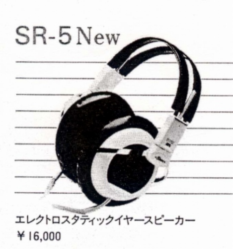
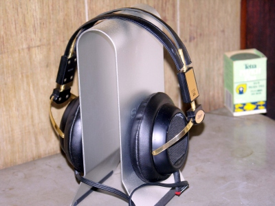

SR-5N

■価格 16,000円
■型式 エレクトロスタテック型
■振動板 膜厚2ミクロン
■インピーダンス
■再生周波数帯域 30-25,000Hz
■許容入力
■感度 96dB/100Vr.m.s
■コード 2.5m編組
■重量 390g（コード含まず）
■発売 1982年
■販売終了 1985〜86年頃
■備考
SR-5の後継機。SR-1の直系機では最後のモデル。
振動膜をSR-X/MK-3などと同じ2ミクロン厚にしたモデル。
広告には登場したが、当時の国内カタログでは現時点では確認できない。
しかし英語版カタログでは記載されているし、SR-α（アルファ）Professinal
の母体モデルとしては、国内カタログに記述されている。
SR-5NBというブラックタイプが存在し、主に海外で販売されたようだが、
株式会社時代の末期に、国内でアダプターとセット販売されたものがあった。
その個体はSR-1系列では使われなかった平行ケーブルの機体で
1994年の広告によると29,800円で300台販売されたらしい。

写真は管理人所有機 上記のセット販売されたとおぼしきSR-5NB
STAXのインデックスヘ